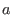
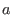

In deriving the Grad-Shafranov equation, we have assumed that the plasma flow
is zero. Next, we examine whether this assumption is well justified for the
EAST plasmas. Note that
, where  is the thermal
pressure at the magnetic axis and  is the minor radius of plasma. For
typical EAST plasmas (EAST#38300@3.9s),
,
is the thermal
pressure at the magnetic axis and  is the minor radius of plasma. For
typical EAST plasmas (EAST#38300@3.9s),
,
 . Then
. One the other hand, the centrifugal force due to toroidal rotation can
be estimated as
. Then
. One the other hand, the centrifugal force due to toroidal rotation can
be estimated as
where is the rotation velocity. To make the centrifugal force be
comparable with , i.e.,
the rotation velocity needs to be of the order
, which corresponds to a rotation frequency
which is larger by one order than the rotation frequency observed
in EAST experiments (about 10
). This indicates the rotation has
little influence on the static equilibrium. In other words, the EAST tokamak
equilibrium can be well described by the static equilibrium.
Note in passing that the complete momentum equation is given by
where
term can be usually neglected due to either
or
,
is a pressure tensor,
which is different from the scalar pressure considered in this note. The
equilibrium with pressure tensor can be important for future burning plasma,
where the pressure contributed by fast ions from the neutral beam injection
can be a tensor.
[Mass density of EAST#38300@3.9s,
.
]
yj
2018-03-09